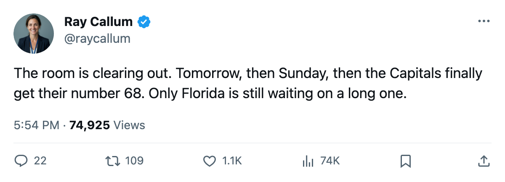
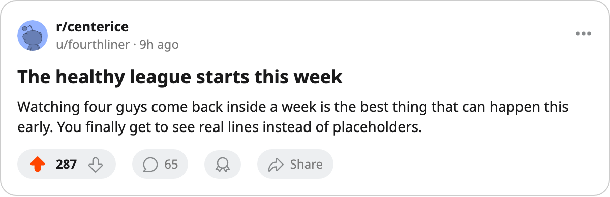

CAR
CAR FLA
FLAThe Infirmary: 4 of 5 return before the weekend, and Jagr is the one everyone is waiting on
Kubina and Reichel are back tomorrow, Ozolinsh Sunday, Jagr for the Carolina trip. Only Florida's Mezei is out past November.
 Ray CallumSenior correspondent · Home Ice Network
Ray CallumSenior correspondent · Home Ice Network
Four of the five men on the injured list come back before next weekend.  Branislav Mezei73 is the only one the league still has out past November.
Branislav Mezei73 is the only one the league still has out past November.
The return dates are firm:
| player | club | part | back |
|---|---|---|---|
 Pavel Kubina79 Pavel Kubina79 | NJ | ankle | 2005-10-14 |
 Robert Reichel77 Robert Reichel77 | PHX | wrist | 2005-10-14 |
 Sandis Ozolinsh89 Sandis Ozolinsh89 | CAR | hand | 2005-10-16 |
 Jaromir Jagr84 Jaromir Jagr84 | WSH | elbow | 2005-10-17 |
| Branislav Mezei | FLA | leg | 2005-11-13 |
Pavel Kubina and Robert Reichel are the first out of the room tomorrow.  New Jersey Devils and
New Jersey Devils and  Phoenix Coyotes both opened the weekend short a piece, and each gets it back with the road trip barely underway.
Phoenix Coyotes both opened the weekend short a piece, and each gets it back with the road trip barely underway.
The one every desk in the Eastern Conference is reading is Jagr. He took the Art Ross last season, grades 91 in the Book, and  Washington Capitals has gone 0-0-1 without him. The league has the elbow at 2005-10-17, which is the day Washington opens its week on the road at Carolina.
Washington Capitals has gone 0-0-1 without him. The league has the elbow at 2005-10-17, which is the day Washington opens its week on the road at Carolina.
Carolina gets a name of its own back before that one. Sandis Ozolinsh returns 2005-10-16, a day before the Panthers' old club hosts Jagr's Capitals. Two clubs adding a body to the same night, one on either side of a first meeting.
That leaves Florida alone in the cold. Mezei's leg has cost the Panthers 32 days on the league ledger, the longest spell on the board, and the club is 0-0-1 after an overtime loss. Florida opens the week on the road at Minnesota with a hole on its blue line.

